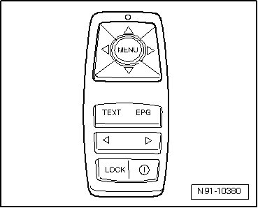
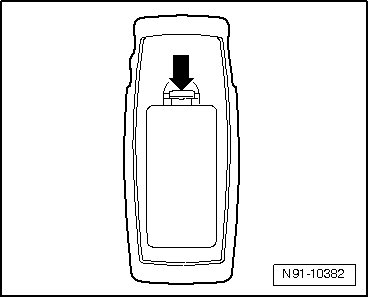
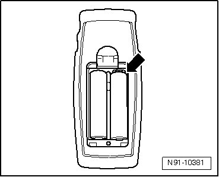

Changing Batteries In Remote Control (Radio-Controlled)
Changing Batteries In Remote Control

Remote control is radio-controlled. If remote control does no longer work properly, discharged batteries could be the reason for this. Change batteries as follows:
- Open cover of remote control - arrow -.

- Remove batteries - arrow - and replace with two new, identical "AAA" batteries.

• Note currently valid precautions for disposal of old batteries.
Note correct polarity when inserting new battery. It is stamped in battery compartment of remote control.
- Close cover of remote control.
- Check correct function of remote control.
Remote control does not need to be adapted when replacing batteries.